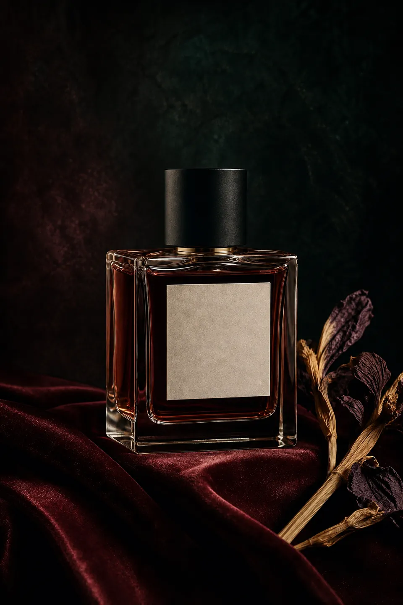
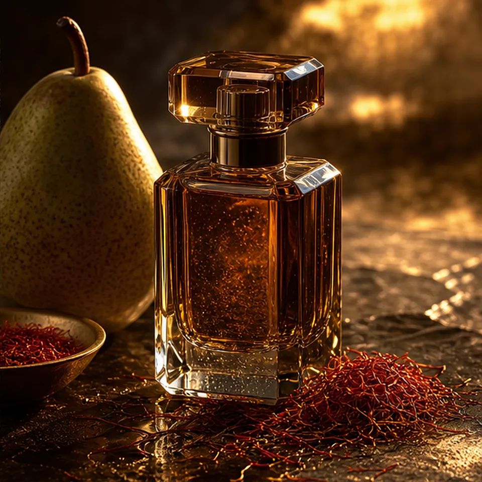
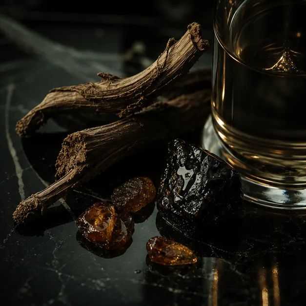

Nocturne / fine fragrance
A SCENT BEFORE THE NOTES.
Fragrance needs a slower route than a product grid: name the moment first, then let samples, bottles and refills follow a clear decision.
Find your scentA discovery flow can protect the atmosphere of a fine fragrance brand while still giving a first-time visitor a confident next action.

Brand feature
MAKE AN INVISIBLE PRODUCT EASIER TO CHOOSE.
Visitors enter by mood, time and intensity. Notes support the decision later, while the Discovery set becomes a clear, low-pressure first commitment.

Scent finder
CHOOSE THE MOMENT YOU KEEP.
Three readable emotional entry points replace a wall of notes and carry the choice into a sample route.
Late light / Discovery setSaffron, pear skin and amber resin before the full bottle.

Ritual route
FROM FIRST SPRAY TO A REASON TO RETURN.
The journey remembers a mood and makes the next action clear without pushing a price-led decision.
Try the set: three small sprays with context.